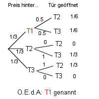

Lösung Puzzle 7: Ziegenproblem
Der Teilnehmer wird mit grossem Vorteil seine Wahl ändern, d.h. auf die andere Tür (im Beispiel Tür Nummer 3) setzen! Die Wahrscheinlichkeit, dass das Auto hinter der anderen Tür ist, beträgt 2/3, die Wahrscheinlichkeit dafür, dass es hinter der zuerst gewählten Tür steht, nur 1/3.
Man experimentiere mit dem folgenden JavaScript-Programm:
Klicken Sie auf eine Türe
Sie haben von insgesamt 0 Spielen 0 Spiele gewonnen.
Durch permanentes Umwählen hätte man von allen Spielen 0 Spiele gewonnen.
Beim Zufallspiel trifft der Computer seine zweite Wahl rein zufällig.

Begründung: Ohne Einschränkung der Allgemeinheit kann vom Beispiel
ausgegangen werden. Tür 2 bzw. Tür 3 öffnet sich mit W'keit 1/2. Da bei beiden
Fällen das Auto noch hinter Tür 1 stehen kann, insgesamt die W'keit des Preises hinter
Tür 1 aber 1/3 beträgt, so muss jeder Weg zu Tür 1 mit W'keit 1/6 auftreten. Die
W'keit, dass sich der Preis hinter Tür 1 befindet, unter der Bedingung dass sich Tür 2
bzw. Tür 3 geöffnet hat, beträgt also immer noch 1/3.
mathematisch: P(T2 geöffnet) = 1/6 + 0 + 1/3 = 0.5
P(Preis hinter T1 | T2 geöffnet) = (1/6) / 0.5 = 1/3
P(Preis hinter T3 | T2 geöffnet) = (1/3) / 0.5 = 2/3
©1997 - 2026 www.mathematik.ch |🔍